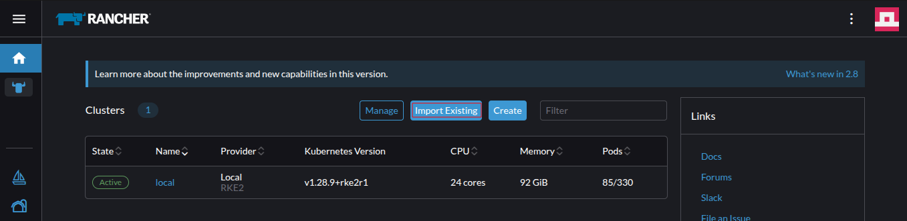
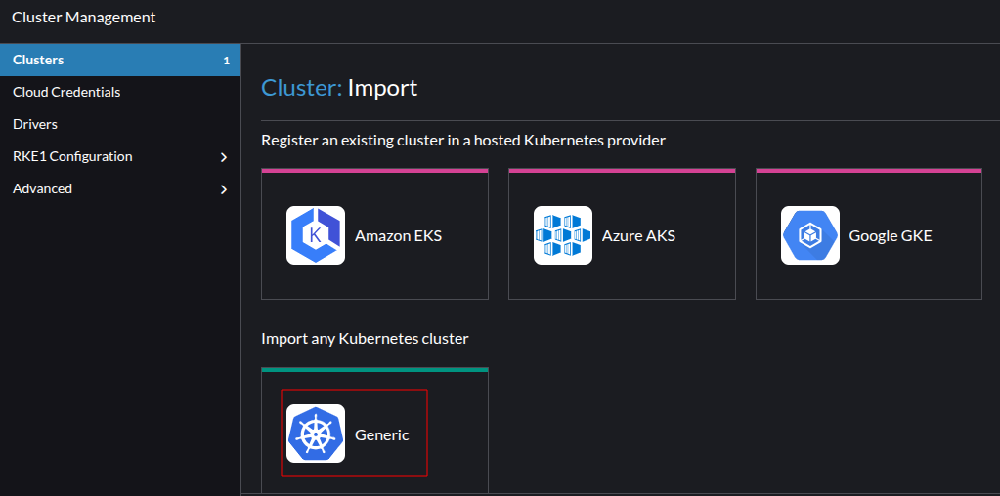
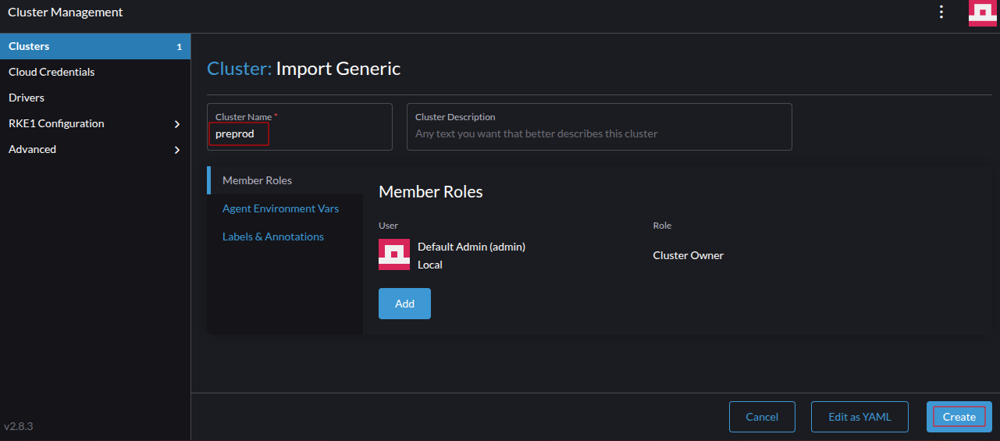
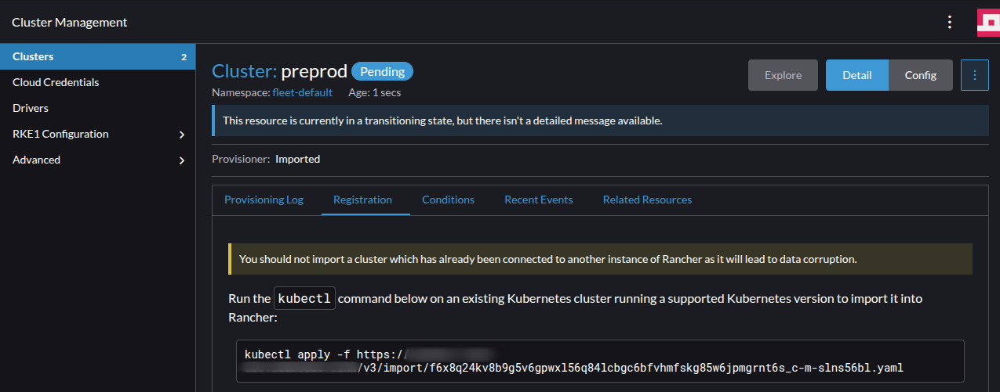
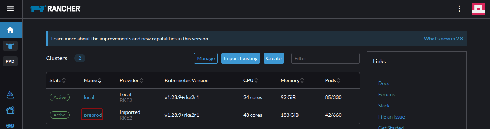
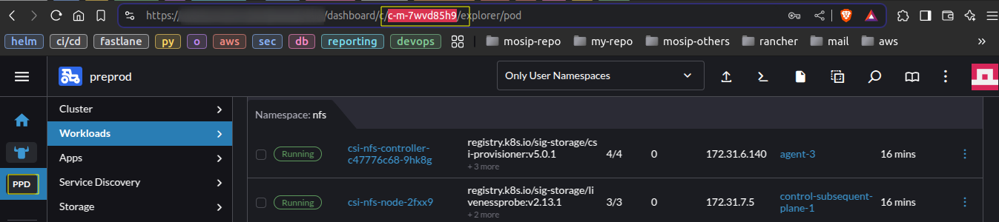
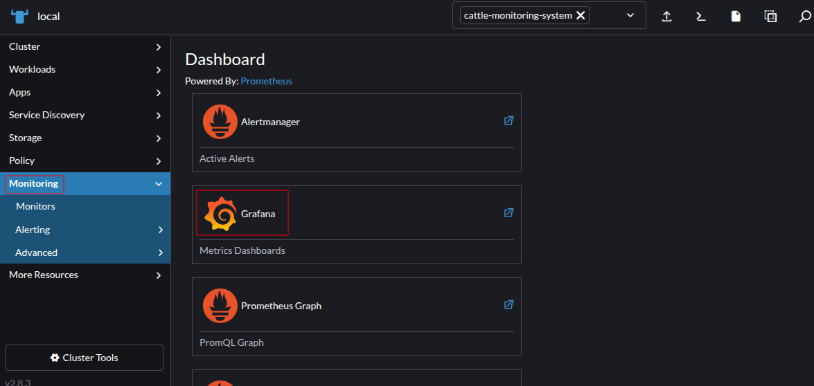

Installation of Necessary Tools on Console Machine
sudo apt update && sudo apt install git tmux -y
sudo apt update && sudo apt install software-properties-common -y && sudo add-apt-repository --yes --update ppa:ansible/ansible && sudo apt install ansible -y
wget https://get.helm.sh/helm-v3.16.2-linux-amd64.tar.gz && tar -zxvf helm-v3.16.2-linux-amd64.tar.gz && sudo mv linux-amd64/helm /bin/
curl -L https://istio.io/downloadIstio | ISTIO_VERSION=1.22.0 TARGET_ARCH=x86_64 sh -
sudo mv istio-1.22.0/bin/istioctl /bin/
istioctl version
ansible --version
helm version
Operating System:
Ubuntu 24.04.1 LTS version:PRETTY_NAME="Ubuntu 24.04.1 LTS"
NAME="Ubuntu"
VERSION_ID="24.04"
VERSION="24.04.1 LTS (Noble Numbat)"
VERSION_CODENAME=noble
ID=ubuntu
ID_LIKE=debian
HOME_URL="https://www.ubuntu.com/"
SUPPORT_URL="https://help.ubuntu.com/"
BUG_REPORT_URL="https://bugs.launchpad.net/ubuntu/"
PRIVACY_POLICY_URL="https://www.ubuntu.com/legal/terms-and-policies/privacy-policy"
UBUNTU_CODENAME=noble
LOGO=ubuntu-logo
Infrastructure Requirements:
Set up Virtual Machines (VMs) for the cluster.
Install nfs-common package on all the nodes of the Kubernetes cluster.
sudo apt install nfs-common -y
Configure an NFS volume and mount it on the primary and subsequent control plane nodes at /mnt/mosip-k8s-data/.
Ensure that the mount point for NFS volumes is added to /etc/fstab to ensure automatic mounting upon system boot.
$ cat /etc/fstab
....
....
172.16.119.11:/rancher-k8s-data /mnt/mosip-k8s-data nfs rw,sync,noac,vers=4 0 0
Set up a load balancer with a domain and IP for the Kubernetes cluster.
Expose the following ports on the load balancer.
9345/tcp443/tcp6443/tcp61616/tcp : If you want to deploy activemq server on the kubernetes cluster5432/tcp : If you want to deploy postgres server on the kubernetes clusterThe load balancer route:
-----
Load balancer host Load balancer Kubernetes node ports
----------------------------------------------------------------------------------------------
preprod.nsis.nira.go.ug 9345/tcp -----> <controlplane nodes> : 9345/tcp
preprod.nsis.nira.go.ug 6443/tcp -----> <controlplane nodes> : 6443/tcp
api-preprod.nsis.nira.go.ug 443/tcp -----> <kubernetes nodes> : 30080/tcp
api-internal-preprod.nsis.nira.go.ug 443/tcp -----> <kubernetes nodes> : 31080/tcp
acitvemq-preprod.nsis.nira.go.ug 61616/tcp -----> <kubernetes nodes> : 31616/tcp
preprod.nsis.nira.go.ug 5432/tcp -----> <kubernetes nodes> : 31432/tcp
Offload SSL on the load balancer.
Ensure that the SSL certificates are not forwarded with the request from the load balancer to the Kubernetes node ports on 30080 & 31080.
Obtain valid SSL certificates and domain names:
Domains:
| Domain | Record Type | IP / CNAME |
|---|---|---|
| api-preprod.nsis.nira.go.ug | A (IPv4) | X.X.X.X |
| api-internal-preprod.nsis.nira.go.ug | A (IPv4) | Y.Y.Y.Y |
| prereg-preprod.nsis.nira.go.ug | CNAME | api-preprod.nsis.nira.go.ug |
| preprod.nsis.nira.go.ug | CNAME | api-internal-preprod.nsis.nira.go.ug |
| activemq-preprod.nsis.nira.go.ug | CNAME | api-internal-preprod.nsis.nira.go.ug |
| kibana-preprod.nsis.nira.go.ug | CNAME | api-internal-preprod.nsis.nira.go.ug |
| admin-preprod.nsis.nira.go.ug | CNAME | api-internal-preprod.nsis.nira.go.ug |
| regclient-preprod.nsis.nira.go.ug | CNAME | api-internal-preprod.nsis.nira.go.ug |
| minio-preprod.nsis.nira.go.ug | CNAME | api-internal-preprod.nsis.nira.go.ug |
| kafka-preprod.nsis.nira.go.ug | CNAME | api-internal-preprod.nsis.nira.go.ug |
| iam-preprod.nsis.nira.go.ug | CNAME | api-internal-preprod.nsis.nira.go.ug |
| pmp-preprod.nsis.nira.go.ug | CNAME | api-internal-preprod.nsis.nira.go.ug |
| mvs-preprod.nsis.nira.go.ug | CNAME | api-internal-preprod.nsis.nira.go.ug |
A wildcard SSL certificate for example : *.nsis.nira.go.ug.
Disable swap on all the Kubernetes nodes.
sudo swapoff -a
Remove swap file entry from /etc/fstab file and remove the swap file /swap.img from OS.
/swap.img none swap sw 0 0
Ensure to reboot the OS.
Expose the necessary ports for Kubernetes nodes to communicate to each other.
Control plane node / Subsequent control plane nodes:
9345/tcp6443/tcp2379/tcp2380/tcp2381/tcp10250/tcp8472/udp9099/tcp22/tcpAgent / worker nodes:
10250/tcp8472/udp9099/tcp22/tcpStart a tmux session on console machine to ensure session persistence. This allows you to resume your shell in case of a network disruption between your local system and the console machine.
tmux new -s <session-name>
Configure ssh, from the console machine to all the Kubernetes nodes.
Generate SSH keys on your console machine:
ssh-keygen -t rsa
Set up passwordless SSH access by copying your SSH key to remote machines using the following steps.
sshpass on console machine.sudo apt-get install sshpass -y
USERNAME: The username for SSH authentication.PASSWORD: The corresponding password for the user.VM_LIST: A space-separated list of IP addresses or hostnames of target machines, enclosed in double quotes.
VM_LIST=("<node-1>" "<node-2>" "<node-3>" "<node-4>")
USERNAME=<user-name>
PASSWORD=<password>
for VM in "${VM_LIST[@]}"; do
echo "Server : $VM "
sshpass -p "$PASSWORD" ssh-copy-id -o StrictHostKeyChecking=no $USERNAME@$VM
done
VM_LIST=("172.16.112.11" "172.16.112.12" "172.16.112.13")
USERNAME=YYYYY
PASSWORD=XXXXX
Clone the repository:
cd ~/
git clone https://github.com/niragit/k8s-infra.git -b develop
cd ~/k8s-infra/k8-cluster/on-prem/rke2/ansible
Create and update the inventory file:
cp hosts.ini.sample hosts.ini
control_plane_primary, control_plane_subsequent, and agents groups in hosts.ini:ansible_host=<internal_ip>
ansible_user=<username>
ansible_ssh_private_key_file=/home/<username>/.ssh/id_rsa
primary controlplane and controlplane subsequent are odd number of nodes in total.eg: If 1 primary controlplane + 2 subsequent controlplane nodes = 3 (total)
hosts.ini file:cluster_domain: e.g., mosip-preprodrke2_token: Unique token for nodes to join the kubernetes cluster.ETCD_BACKUP_DIR: Path for etcd snapshots, e.g., /mnt/mosip-k8s-data (snapshots stored in /mnt/mosip-k8s-data/etcd/snapshots)AUDIT_BACKUP_DIR: Path for audit logs, e.g., /mnt/mosip-k8s-data (logs stored in /mnt/mosip-k8s-data/audit)LB_DOMAIN: e.g., preprod.nsis.nira.go.ugLB_IP: e.g., 172.16.130.71vlan=XXX in specific host line as per requirement. This is set the node label vlan=XXX
eg:[control_plane_primary]
control-plane-1 ansible_host=<internal ip> vlan=200
[localhost]
localhost ansible_connection=local ansible_user=XXXX ansible_ssh_pass=YYYY
Run the following command to initiate the setup of the RKE2 Kubernetes cluster:
ansible-playbook -i hosts.ini main.yaml
Upon successful execution, the Kubernetes cluster's kubeconfig file will be available on all control plane nodes at /etc/rancher/rke2/rke2.yaml
To manage the cluster from a console machine:
/etc/rancher/rke2/rke2.yaml to the console machine.chmod 400 <kube-config-file>
server: https://<load-balancer-domain>:6443
127.0.0.1 to load-balancer-domainapiVersion: v1
clusters:
- cluster:
....
....
server: https://preprod.nsis.nira.go.ug:6443
....
Once the playbook executes successfully, copy the kubectl binary from one of the control plane nodes to the console machine.
Update username and control plane host in the below command to copy the kubectl executable file to console machine.
scp <username>@<control-plane-host>:/var/lib/rancher/rke2/bin/kubectl ./kubectl
Move the kubectl executable file to /bin/ directory.
sudo chmod +x ./kubectl && sudo mv ./kubectl /bin/
Verify the kubectl version. i.e., v1.28.9+rke2r1
kubectl version
Point kubectl to newly created cluster config file.
export KUBECONFIG=/path/to/kubeconfig/file
eg.
export KUBECONFIG=/home/ubuntu/k8s-infra/k8-cluster/on-prem/rke2/ansible/playbook/kubeconfigs/rancher-control-plane-1.yaml`
Access the kubernetes cluster via the below command:
kubectl get nodes
Note: By default, the RKE2 server and agent services are disabled to prevent additional system load during OS boot.
To register an existing cluster with the Rancher management server, follow these steps:
Log in to the Rancher Dashboard
https://rancher.nsis.nira.go.ug.admin).Navigate to the Home page or Cluster management section and select "Import Existing".

Select "Generic" as the cluster type.

Enter a unique name in the "Cluster Name" field and click on "Create" to proceed.

Rancher will generate a kubectl command to register the cluster and execute the provided command on the MOSIP Kubernetes cluster.
eg:
kubectl apply -f https://rancher.nsis.nira.go.ug/v3/import/pdmkx6b4xxtpcd699gzwdtt5bckwf4ctdgr7xkmmtwg8dfjk4hmbpk_c-m-db8kcj4r.yaml

Wait for a few moments while Rancher verifies the cluster.
Once verification is complete, the cluster will be successfully added to the Rancher management server.
$ kubectl get po -n cattle-system
NAME READY STATUS RESTARTS AGE
cattle-cluster-agent-7d74595845-lcs2k 1/1 Running 0 2m41s
cattle-cluster-agent-7d74595845-v9txf 1/1 Running 0 104s
helm-operation-jwqz8 0/2 Completed 0 81s
rancher-webhook-bcc8984b6-f7488 1/1 Running 0 66s

Your cluster is now registered and can be managed via Rancher. 🚀cd ~/k8s-infra/storage-class/nfs
./install-nfs-csi.sh to deploy NFS client provisioner../install-nfs-csi.sh
....
Please provide NFS SERVER: <NFS-SERVER>
Please provide NFS Path: <NFS-SERVER-PATH>
cd ~/k8s-infra/monitoring/
cluster-id from Rancher management server as shown in below image.

install.sh to deploy monitoring application. Provide the cluster-id as user input variable as shown in the below image../install.sh
....
....
Please enter the env cluster-id: c-m-7wd85h5
All namespace ---> Monitoring ---> Grafana Dashboards.

admin user password for grafana dashboard.kubectl -n cattle-monitoring-system get secret rancher-monitoring-grafana -o json | jq -r '.data."admin-password" | @base64d'
k8s-infra directory.cd ~/k8s-infra/
global-configmap.yaml file from sample file global-configmap.sample.cp global-configmap.sample global-configmap.yaml
global-configmap.yaml file.kubectl -n default apply -f global-configmap.yaml
Istio-mesh/nodeport directory.cd ~/k8s-infra/ingress/istio-mesh/nodeport/
./install.sh to deploy Istio../install.sh
Navigate to the Logging Directory.
Change to the logging directory before proceeding with the deployment:
cd ~/k8s-infra/logging/
Deploy the Logging Operator.
Run the install.sh script to install the logging operator and associated applications:
./install.sh
Configure Elasticsearch Index Lifecycle Policy.
Modify the ./elasticsearch-ilm-script.sh file as per your requirements.
Then, execute the script to apply the Index Lifecycle Policy and Index Template to Elasticsearch:
./elasticsearch-ilm-script.sh
To collect logs, create ClusterOutputs as follows:
Create an Elasticsearch ClusterOutput:
kubectl apply -f clusteroutput-elasticsearch.yaml
Create a ClusterFlow:
kubectl apply -f clusterflow-elasticsearch.yaml
./dashboards directory into Kibana:./load_kibana_dashboards.sh ./dashboards <cluster-kube-config-file>
httpbin directorycd ~/k8s-infra/utils/httpbin/
./install.sh to deploy httpbin application.httpbin service via both public and private url. This is to ensure that services are accessible via both public and private urls.$ curl https://api-internal-preprod.nsis.nira.go.ug/httpbin/get?show_env=true
{
....
"headers": {
"Host": "api-internal-preprod.nsis.nira.go.ug",
.....
},
"origin": "172.31.1.176,10.42.3.0",
"url": "https://api-internal-preprod.nsis.nira.go.ug/get?show_env=true"
}
$ curl https://api-preprod.nsis.nira.go.ug/httpbin/get?show_env=true
{
....
"headers": {
"Host": "api-preprod.nsis.nira.go.ug",
....
....
},
"origin": "172.31.1.176,10.42.3.0",
"url": "https://api-preprod.nsis.nira.go.ug/get?show_env=true"
}
mosip-infra repositorycd ~/
git clone https://github.com/niragit/mosip-infra.git -b NIRA-INFRA-PROD
Note: Skip this step if an external PostgreSQL server is available.
To set up the PostgreSQL server within the Kubernetes cluster, follow these steps:
cd ~/mosip-infra/deployment/v3/external/postgres/
./install.sh
Ensure that the postgres username and postgres database are created with superuser permissions.
Navigate to the PostgreSQL directory:
cd ~/mosip-infra/deployment/v3/external/postgres/
Create a db-config ConfigMap containing the list of database servers and ports:
kubectl -n postgres create cm db-config --from-literal="database-pool-hostnames=<SERVER-1>:<SERVER1-PORT>,<SERVER-2>:<SERVER2-PORT>"
Example:
kubectl -n postgres create cm db-config --from-literal="database-pool-hostnames=192.168.122.11:6432,192.168.122.12:6432"
Set the PostgreSQL user password:
export POSTGRES_PASSWORD="<your-secure-password>"
Create a Kubernetes secret for database credentials:
kubectl -n postgres create secret generic mosip-user-db-credentials --from-literal="mosip-user-password=$POSTGRES_PASSWORD" --dry-run=client -o yaml | kubectl apply -f -
Update the database connection details in init_values.yaml:
<database-host><database-port>dbuserPassword (Ensure to provide a strong password)Provide the repository URL in init_values.yaml for accessing private database scripts:
https://<token>@github.com/<account>/<repository>.git
Run init_db.sh to initialize databases for MOSIP applications.
./init_db.sh
Navigate to the Keycloak directory:
cd ~/mosip-infra/deployment/v3/external/iam/
Install PostgreSQL client package:
sudo apt install postgresql-client* -y
Update the password in the bitnami-keycloak-db.dump file:
ALTER ROLE bn_keycloak WITH NOSUPERUSER INHERIT NOCREATEROLE CREATEDB LOGIN NOREPLICATION NOBYPASSRLS PASSWORD 'xyz@123';
Execute the following command to create the Bitnami Keycloak database:
psql -h <postgres hostname/IP> -p <port> -U postgres -f bitnami-keycloak-db.dump
Update the values.yaml file with external database details and autoscaling if required:
postgresql:
enabled: false
externalDatabase:
host: "<host/IP>"
port: <port>
user: bn_keycloak
database: bitnami_keycloak
password: "<password>"
autoscaling:
enabled: false
minReplicas: 1
maxReplicas: 5
targetCPU: "75"
targetMemory: "75"
Deploy the Keycloak application:
./install.sh
Navigate to the Keycloak directory:
cd ~/mosip-infra/deployment/v3/external/iam/
Execute the Keycloak initialization script:
./keycloak_init.sh
Note: Provide SMTP details when prompted during script execution.
If you want to deploy softhsm / mock-hsm, navigate to softhsm directory.
cd ~/mosip-infra/deployment/v3/external/hsm/softhsm
./install.sh
To set up the MinIO object storage service, follow these steps:
object-store directory:cd ~/mosip-infra/deployment/v3/external/object-store/
cd ~/mosip-infra/deployment/v3/external/object-store/
./install.sh
object-store directory:cd ~/mosip-infra/deployment/v3/external/object-store/
cred.sh to set object store credentials:./cred.sh
ubuntu@ip-172-31-1-176:~/mosip-infra/deployment/v3/external/object-store$ ./cred.sh
Create s3 namespace
namespace/s3 created
Istio label
namespace/s3 labeled
Plesae select the type of object-store to be used:
1: for minio native using helm charts
2: for s3 object store
Please choose the correct option as mentioned above(1/2)2
Please enter the S3 user key <s3-access-key>
Please enter the S3 secret <s3-secret-key>
Please enter the S3 region <s3-ragion>
Please provide pretext value : <s3-pretext-value>
Please provide s3 host url : <s3-url>
mock-smtp directory.cd ~/mosip-infra/deployment/v3/mosip/mock-smtp/
./install.sh
msg-gateway directory.cd ~/mosip-infra/deployment/v3/external/msg-gateway/
./install.sh to set the SMS and EMAIL configuration~/mosip-infra/deployment/v3/external/msg-gateway$ ./install.sh
Create msg-gateways namespace
namespace/msg-gateways created
Istio label
namespace/msg-gateways labeled
Would you like to use mock-smtp (Y/N) [ Default: Y ] : N
Please enter the SMTP host XXXXX
Please enter the SMTP host port 2222
Please enter the SMTP user ADMIN
Please enter the SMTP secret key SSSS
Would you like to use mock-sms (Y/N) [ Default: Y ] : N
Please enter the SMS host YYYY
Please enter the SMS host port 3333
Please enter the SMS user ADMIN
Please enter the SMS secret key wwww
Please enter the SMS auth key QQQQ
configmap/msg-gateway created
secret/msg-gateway created
smtp and sms related configurations set.
clamav directory.cd ~/mosip-infra/deployment/v3/external/antivirus/clama/
hpa to true and set the max replicas if required.hpa:
enabled: false
maxReplicas: 3
# average total CPU usage per pod (1-100)
cpu: "80"
# average memory usage per pod (100Mi-1Gi)
memory: "80"
# requests: "500m"
./install.sh to deploy the ClamAV../install.sh
kubectl create ns activemq
kubectl -n activemq create configmap activemq-activemq-artemis-share --from-literal="activemq-core-port=XXXX" --from-literal="activemq-host=YYYY" --dry-run=client -o yaml | kubectl apply -f -
kubectl -n activemq create secret generic activemq-activemq-artemis --from-literal="artemis-password=ZZZZ" --dry-run=client -o yaml | kubectl apply -f -
cd ~/mosip-infra/deployment/v3/external/activemq/
install.sh to deploy ActiveMQ on the Kubernetes cluster:./install.sh
To deploy a Redis server in your Kubernetes cluster, follow the steps below:
NS=redis
CHART_VERSION=17.3.14
echo Create $NS namespace
kubectl create ns $NS || true
echo Istio label
kubectl label ns $NS istio-injection=enabled --overwrite
echo Updating helm repos
helm repo add bitnami https://charts.bitnami.com/bitnami
helm repo update
echo Installing redis
helm -n $NS install redis bitnami/redis --set-string master.nodeSelector.vlan="200" --set-string replica.nodeSelector.vlan="200" --wait --version $CHART_VERSION
Update Redis host and port in the command below and execute it on kubernetes cluster to create a ConfigMap:
kubectl -n redis create configmap redis-config --from-literal="redis-host=XXXXX" --from-literal="redis-port=YYYY" --dry-run=client -o yaml | kubectl apply -f -
Replace XXXXX with the Redis host and YYYY with the Redis port.
kubectl -n biosdk create cm biosdk-config --from-literal="mosip-biosdk-url=http://<SERVER-IP>:<PORT>"
kafka directory.cd ~/mosip-infra/deployment/v3/external/kafka/
ui-values.yaml, enable autoscaling and configure the required number of replicas:autoscaling:
enabled: true
minReplicas: 1
maxReplicas: 2
targetCPUUtilizationPercentage: "75"
targetMemoryUtilizationPercentage: "75"
./install.sh
landing-page directory:cd ~/mosip-infra/deployment/v3/external/landing-page/
./install.sh to deploy landing-page service.Note: To enable Horizontal Pod Autoscaling (HPA) for MOSIP modules, ensure that the following configuration is included in the
values.yamlfile when executing the Helm install command. Adjust themaxReplicasvalue as needed to meet your scaling requirements.autoscaling: enabled: true minReplicas: 1 maxReplicas: 3 targetCPUUtilizationPercentage: "75" targetMemoryUtilizationPercentage: "75"
The conf-secrets module is responsible for generating secrets required by the Config Server and other MOSIP applications.
conf-secrets directory.cd ~/mosip-infra/deployment/v3/mosip/conf-secrets/
./install.sh
config-server directory.cd ~/mosip-infra/deployment/v3/mosip/config-server/
softhsm or mockhsm is not being used, comment out the following lines in the copy_cm.sh script:$COPY_UTIL secret softhsm-kernel softhsm $DST_NS
$COPY_UTIL secret softhsm-ida softhsm $DST_NS
./install.sh to deploy the config serverartifactory directory.cd ~/mosip-infra/deployment/v3/mosip/artifactory/
./install.sh to deploy the artifactory server.keymanager directory.cd ~/mosip-infra/deployment/v3/mosip/keymanager/
./install.sh to deploy Keymanager.websub directory.cd ~/mosip-infra/deployment/v3/mosip/websub/
./install.sh to deploy Keymanager.kernel directory.cd ~/mosip-infra/deployment/v3/mosip/kernel/
./install.sh to deploy kernel.The masterdata-loader module is responsible for loading master data required for MOSIP applications.
masterdata-loader directory.cd ~/mosip-infra/deployment/v3/mosip/masterdata-loader/
install.sh script:mosipDataGithubRepoUrl: The GitHub repository URL containing the required data. mosipDataGithubBranch : The branch containing the required data../install.sh to deploy masterdata-loader job.Note: If using a private GitHub repository, include the authentication token in the repository URL:
https://<token>@github.com/niragit/mosip-data.git
biosdk directory.cd ~/mosip-infra/deployment/v3/mosip/biosdk/
./install.sh
packetmanager directory.cd ~/mosip-infra/deployment/v3/mosip/packetmanager/
./install.sh
datashare directory.cd ~/mosip-infra/deployment/v3/mosip/datashare/
./install.sh
prereg directory.cd ~/mosip-infra/deployment/v3/mosip/prereg/
./install.sh
idrepo directory.cd ~/mosip-infra/deployment/v3/mosip/idrepo/
./install.sh
pms directory.cd ~/mosip-infra/deployment/v3/mosip/pms/
./install.sh to deploy the PMS services and UI:Note: Skip this step if real ABIS and Manual Verification (MV) services is available.
abis directory.cd ~/mosip-infra/deployment/v3/mosip/abis/
MockABIS and MockMV:./install.sh
regproc directory.cd ~/mosip-infra/deployment/v3/mosip/regproc/
./install.sh
admin directory.cd ~/mosip-infra/deployment/v3/mosip/admin/
./install.sh
ida directory.cd ~/mosip-infra/deployment/v3/mosip/ida/
./install.sh
print directory.cd ~/mosip-infra/deployment/v3/mosip/print/
./install.sh
mvs directory.cd ~/mosip-infra/deployment/v3/mosip/mvs/
./install.sh
partner-onboarder directory.cd ~/mosip-infra/deployment/v3/mosip/partner-onboarder/
enabled=true for modules you want to onboard default partners with MOSIP.onboarding:
modules:
- name: ida
enabled: true
- name: print
enabled: true
- name: abis
enabled: true
...
...
./install.sh to onboard default partners.mosip-file-server directory.cd ~/mosip-infra/deployment/v3/mosip/mosip-file-server/
./install.sh
regclient directory.cd ~/mosip-infra/deployment/v3/mosip/regclient/
./install.sh